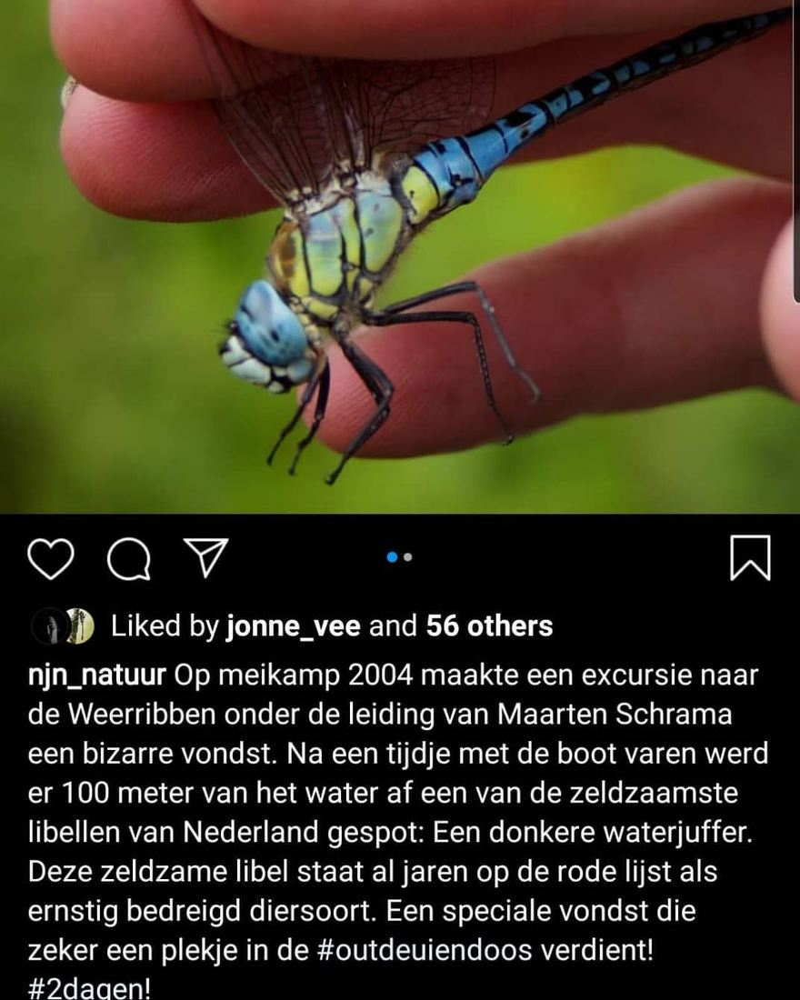

Glazenmaker, geen donkere waterjuffer
15 augustus 2020 · NJN
- Op de foto
- Glazenmaker
- Het ging over
- Donkere waterjuffer

Zelfs de allerbeste maken fouten @njn_natuur. Van harte met jullie 100jarig bestaan. En de volgende keer wel de goede foto bij de soort zetten 😉